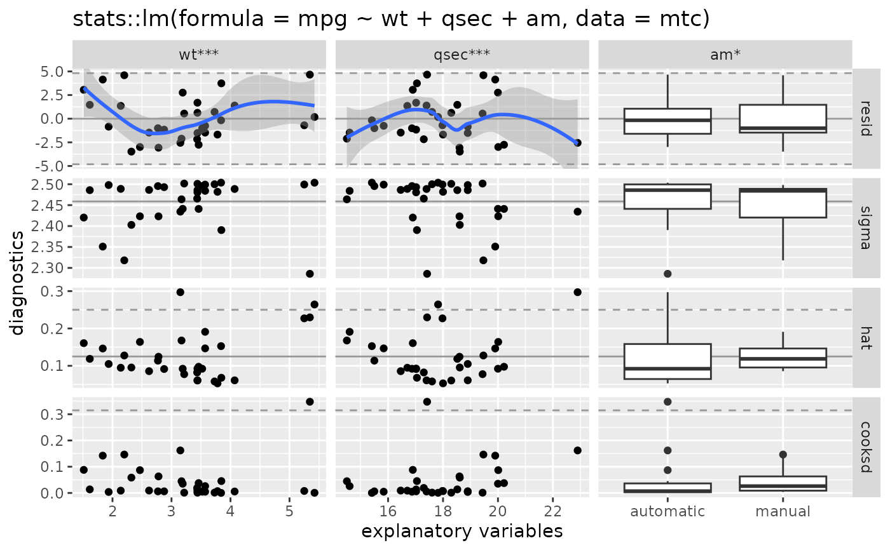
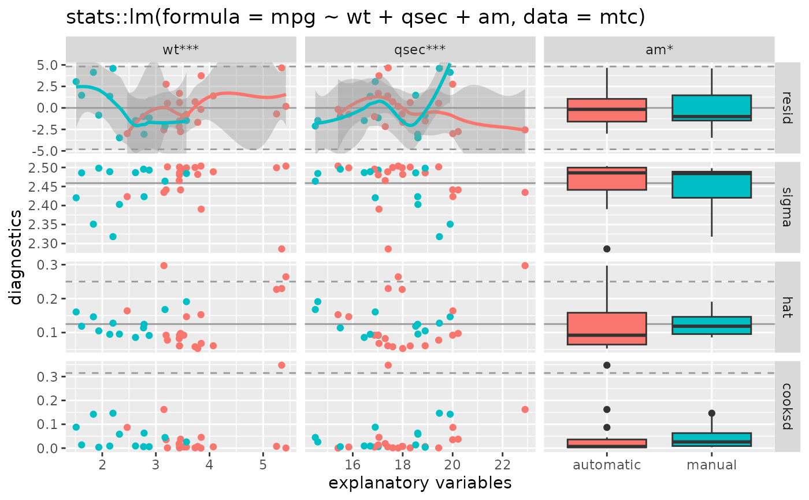

Plot matrix of statistical model diagnostics
ggnostic(
model,
...,
columnsX = attr(data, "var_x"),
columnsY = c(".resid", ".sigma", ".hat", ".cooksd"),
columnLabelsX = attr(data, "var_x_label"),
columnLabelsY = gsub("\\.", " ", gsub("^\\.", "", columnsY)),
xlab = "explanatory variables",
ylab = "diagnostics",
title = paste(deparse(model$call, width.cutoff = 500L), collapse = "\n"),
continuous = list(default = ggally_points, .fitted = ggally_points, .se.fit =
ggally_nostic_se_fit, .resid = ggally_nostic_resid, .hat = ggally_nostic_hat, .sigma
= ggally_nostic_sigma, .cooksd = ggally_nostic_cooksd, .std.resid =
ggally_nostic_std_resid),
combo = list(default = ggally_box_no_facet, .fitted = ggally_box_no_facet, .se.fit =
ggally_nostic_se_fit, .resid = ggally_nostic_resid, .hat = ggally_nostic_hat, .sigma
= ggally_nostic_sigma, .cooksd = ggally_nostic_cooksd, .std.resid =
ggally_nostic_std_resid),
discrete = list(default = ggally_ratio, .fitted = ggally_ratio, .se.fit = ggally_ratio,
.resid = ggally_ratio, .hat = ggally_ratio, .sigma = ggally_ratio, .cooksd =
ggally_ratio, .std.resid = ggally_ratio),
progress = NULL,
data = broomify(model)
)Arguments
- model
statistical model object such as output from
stats::lmorstats::glm- ...
arguments passed directly to
ggduo- columnsX
columns to be displayed in the plot matrix. Defaults to the predictor columns of the
model- columnsY
rows to be displayed in the plot matrix. Defaults to residuals, leave one out sigma value, diagonal of the hat matrix, and Cook's Distance. The possible values are the response variables in the model and the added columns provided by
broom::augment(). See details for more information.- columnLabelsX, columnLabelsY
column and row labels to display in the plot matrix
- xlab, ylab, title
plot matrix labels passed directly to
ggmatrix- continuous, combo, discrete
list of functions for each y variable. See details for more information.
- progress
NULL(default) for a progress bar in interactive sessions with more than 15 plots,TRUEfor a progress bar,FALSEfor no progress bar, or a function that accepts at least a plot matrix and returns a newprogress::progress_bar. Seeggmatrix_progress.- data
data defaults to a 'broomify'ed model object. This object will contain information about the X variables, Y variables, and multiple broom outputs. See
broomify(model)for more information
columnsY
broom::augment() collects data from the supplied model and returns a data.frame with the following columns (taken directly from broom documentation). These columns are the only allowed values in the columnsY parameter to ggnostic.
- .resid
Residuals
- .hat
Diagonal of the hat matrix
- .sigma
Estimate of residual standard deviation when corresponding observation is dropped from model
- .cooksd
Cooks distance,
stats::cooks.distance()- .fitted
Fitted values of model
- .se.fit
Standard errors of fitted values
- .std.resid
Standardized residuals
- response variable name
The response variable in the model may be added. Such as
"mpg"in the modellm(mpg ~ ., data = mtcars)
continuous, combo, discrete types
Similar to ggduo and ggpairs, functions may be supplied to display the different column types. However, since the Y rows are fixed, each row has it's own corresponding function in each of the plot types: continuous, combo, and discrete. Each plot type list can have keys that correspond to the broom::augment() output: ".fitted", ".resid", ".std.resid", ".sigma", ".se.fit", ".hat", ".cooksd". An extra key, "default", is used to plot the response variables of the model if they are included. Having a function for each diagnostic allows for very fine control over the diagnostics plot matrix. The functions for each type list are wrapped into a switch function that calls the function corresponding to the y variable being plotted. These switch functions are then passed directly to the types parameter in ggduo.
Examples
# small function to display plots only if it's interactive
p_ <- GGally::print_if_interactive
data(mtcars)
# use mtcars dataset and alter the 'am' column to display actual name values
mtc <- mtcars
mtc$am <- c("0" = "automatic", "1" = "manual")[as.character(mtc$am)]
# step the complete model down to a smaller model
mod <- stats::step(stats::lm(mpg ~ ., data = mtc), trace = FALSE)
# display using defaults
pm <- ggnostic(mod)
p_(pm)
#> `geom_smooth()` using method = 'loess'
#> `geom_smooth()` using method = 'loess'

# color by am value
pm <- ggnostic(mod, mapping = ggplot2::aes(color = am))
p_(pm)
#> `geom_smooth()` using method = 'loess'
#> `geom_smooth()` using method = 'loess'

# turn resid smooth error ribbon off
pm <- ggnostic(mod, continuous = list(.resid = wrap("nostic_resid", se = FALSE)))
p_(pm)
#> `geom_smooth()` using method = 'loess'
#> `geom_smooth()` using method = 'loess'
 ## plot residuals vs fitted in a ggpairs plot matrix
dt <- broomify(mod)
pm <- ggpairs(
dt, c(".fitted", ".resid"),
columnLabels = c("fitted", "residuals"),
lower = list(continuous = ggally_nostic_resid)
)
p_(pm)
#> `geom_smooth()` using method = 'loess'
## plot residuals vs fitted in a ggpairs plot matrix
dt <- broomify(mod)
pm <- ggpairs(
dt, c(".fitted", ".resid"),
columnLabels = c("fitted", "residuals"),
lower = list(continuous = ggally_nostic_resid)
)
p_(pm)
#> `geom_smooth()` using method = 'loess'